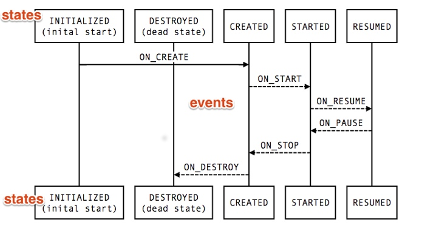

通过 android.arch.lifecycle 包提供的接口和类，我们可以构建出能感知到生命周期的组件。这些组件可以根据当前的Fragment 或者 Activity 的生命周期做出相应的调整
大部分有生命周期的 app 组件都定义在了Android 的Framework 层。操作系统和Framework 维护着这些组件的生命周期。这些都是 Android 运行的核心。
如果想要在一个Activity 中显示设备的地理位置。通常代码是这样的
class MyLocationListener {
public MyLocationListener(Context context, Callback callback) {
// ...
}
void start() {
// connect to system location service
}
void stop() {
// disconnect from system location service
}
}
class MyActivity extends AppCompatActivity {
private MyLocationListener myLocationListener;
public void onCreate(...) {
myLocationListener = new MyLocationListener(this, (location) -> {
// update UI
});
}
public void onStart() {
super.onStart();
myLocationListener.start();
}
public void onStop() {
super.onStop();
myLocationListener.stop();
}
}
目前看起来还不错，但是在实际的工程项目中。生命周期的这些回调方法，比如onStart() onStop() 会变得非常大
而且有些组件还不是简单在onStart()方法中启动。还需要在启动前检查一些设置。比如检查 Activity 是否已经被 stop 或者 finish 掉。
代码可能会是这样
class MyActivity extends AppCompatActivity {
private MyLocationListener myLocationListener;
public void onCreate(...) {
myLocationListener = new MyLocationListener(this, location -> {
// update UI
});
}
public void onStart() {
super.onStart();
Util.checkUserStatus(result -> {
// what if this callback is invoked AFTER activity is stopped?
if (result) {
myLocationListener.start();
}
});
}
public void onStop() {
super.onStop();
myLocationListener.stop();
}
}
android.arch.lifecycle 包会提供有弹性和解耦的解决方法
Lifecycle
Lifecycle 类持有组件（例如 fragment Activity）的生命周期状态信息，允许其他类 observe 这个状态
Lifecycle 使用两个主要枚举来跟踪其关联组件的生命周期状态
Event
framework 和 Lifecycle class. 发出 lifecycle events 。这些event 被映射到 fragment 和 Activity 的的回调中
State
当面组件的生命周期状态

可以吧这些state视为节点。而 event 是这些节点的连线
类可以通过向其方法添加注解来监视组件的生命周期状态。
public class MyObserver implements LifecycleObserver {
@OnLifecycleEvent(Lifecycle.Event.ON_RESUME)
public void onResume() {
}
@OnLifecycleEvent(Lifecycle.Event.ON_PAUSE)
public void onPause() {
}
}
aLifecycleOwner.getLifecycle().addObserver(new MyObserver());
LifecycleOwner
LifecycleOwner 是一个接口，只有一个方法——getLifecycle(), ，返回Lifecycle 。这个接口表示这个类具有一个Lifecycle。
这个类从每个拥有生命周期的独立类（比如fragment Activity ）中抽象出Lifecycle的所有权。这样组件就可以通用的使用Lifecycle
注意
Architecture Components 仍在测试阶段，所以FragmentandAppCompatActivity没有实现这个接口。
LifecycleActivityandLifecycleFragment实现了这个接口。等到Lifecycles到了正式拜。support library 中的 fragment 和 Activity 会实现这个接口。 LifecycleActivity and LifecycleFragment会deprecated。
我们可以把MyLocationListener 实现 LifecycleObserver 接口，并在Lifecycle onCreate 时初始化。这样就可以MyLocationListener自给自足自己做初始化 clean 等
public class LifeCycleTestActivity extends LifecycleActivity {
@Override
protected void onCreate(Bundle savedInstanceState) {
super.onCreate(savedInstanceState);
setContentView(R.layout.activity_life_cycle_test);
MyLocationListener listener = new MyLocationListener(this, getLifecycle());
listener.enable();
getLifecycle().addObserver(listener);
}
}
public class MyLocationListener implements LifecycleObserver {
private static final String TAG = "MyLocationListener";
private boolean enabled = false;
private Context mContext;
private Lifecycle mLifecycle;
public MyLocationListener(Context context, Lifecycle lifecycle) {
mLifecycle = lifecycle;
mContext = context;
}
@OnLifecycleEvent(Lifecycle.Event.ON_START)
void start() {
if (enabled) {
// connect
Log.d(TAG, "Lifecycle.Event.ON_START");
}
}
@OnLifecycleEvent(Lifecycle.Event.ON_RESUME)
void resume() {
if (enabled) {
// connect
Log.d(TAG, "Lifecycle.Event.ON_RESUME");
}
}
public void enable() {
enabled = true;
if ( mLifecycle.getCurrentState().isAtLeast(Lifecycle.State.STARTED)) {
// connect if not connected
}
}
@OnLifecycleEvent(Lifecycle.Event.ON_STOP)
void stop() {
// disconnect if connected
Log.d(TAG, "Lifecycle.Event.ON_STOP");
}
}
当 addObserver 之后，MyLocationListener能接受到 Activity 的生命周期的回调。它能在自己的类做初始化和 清理，解耦了与 Activity 的关系， 从而保持 Activity 代码的整洁
这些能和Lifecycle关联的组件被称为lifecycle-aware components。我们鼓励库提供这类组件。这样客户可以不用手动管理这些组件的生命周期
LiveData是生命周期感知组件的示例。与ViewModel一起使用LiveData可以在遵循Android生命周期的情况下，更容易地使用数据填充UI。
Best practices for Lifecycles
- 保持UI controllers(activities and fragments) 尽可能简洁。他们不应该去获取数据，应该使用
ViewModel获取。然后通过观察ViewModel的变化，映射到 views 中 - 尽可能使数据来驱动 UI，UI controller 的责任是当数据变化时去更新,或者将用户事件传递给
ViewModel - 把数据的逻辑放入
ViewModel类中。ViewModel是连接 UI controller 和其他部分。注意ViewModel的责任不是去获取数据，他的责任是调用合适的组件来做。然后吧结果返回给 UI controller - 使用
Data Binding解耦 view 和 UI controller - 如果 UI 太复杂可以考虑加一个 Presenter 来处理 UI 变化
- 不用在
ViewModel中持有View或者Activity。如果 ViewModel 的生命周期比 Activity 长 有可能会导致内存泄露
Addendum
自定义 fragment Activity 实现LifecycleOwner
自定义 fragment Activity 可以通过构造 LifecycleRegistryOwner 实现LifecycleOwner
public class MyFragment extends Fragment implements LifecycleRegistryOwner {
LifecycleRegistry lifecycleRegistry = new LifecycleRegistry(this);
@Override
public LifecycleRegistry getLifecycle() {
return lifecycleRegistry;
}
}
参考
https://developer.android.com/topic/libraries/architecture/lifecycle.html#lco